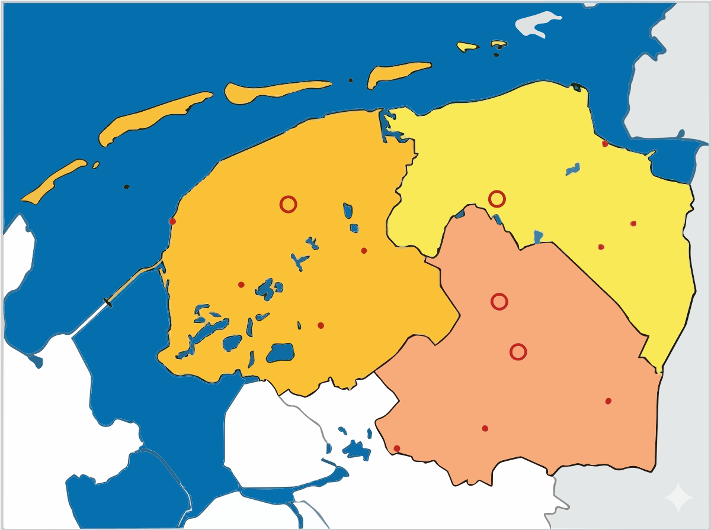

<!DOCTYPE html>
<html lang="nl">
<head>
  <meta charset="UTF-8">
  <meta name="viewport" content="width=device-width, initial-scale=1.0, maximum-scale=1.0, user-scalable=no">
  <title>Topo Noord-Nederland</title>
  <meta name="description" content="Oefen de topografie van Noord-Nederland: zoek plaatsen, wateren en gebieden in Groningen, Friesland en Drenthe op de kaart. Handig voor de topotoets op de basisschool.">
  <link rel="canonical" href="https://topo.wurq.nl/noord-nederland.html">
  <meta name="theme-color" content="#07040f">
  <link rel="icon" href="/favicon.ico" sizes="48x48">
  <link rel="icon" href="/favicon.svg" type="image/svg+xml">
  <link rel="apple-touch-icon" href="/apple-touch-icon.png">
  <meta name="mobile-web-app-capable" content="yes">
  <meta name="apple-mobile-web-app-capable" content="yes">
  <meta name="apple-mobile-web-app-title" content="Topo Noord">
  <meta property="og:type" content="website">
  <meta property="og:site_name" content="Topo Chopper">
  <meta property="og:locale" content="nl_NL">
  <meta property="og:title" content="Topo Noord-Nederland – oefen de topografie van Groningen, Friesland en Drenthe">
  <meta property="og:description" content="Oefen de topografie van Noord-Nederland: zoek plaatsen, wateren en gebieden in Groningen, Friesland en Drenthe op de kaart. Handig voor de topotoets op de basisschool.">
  <meta property="og:url" content="https://topo.wurq.nl/noord-nederland.html">
  <meta property="og:image" content="https://topo.wurq.nl/og-image.png">
  <meta property="og:image:type" content="image/png">
  <meta property="og:image:width" content="1200">
  <meta property="og:image:height" content="630">
  <meta property="og:image:alt" content="Titelscherm van Topo Chopper: een pixel-art helikopter vliegt over een landschap met het Atomium, onder een oranje zonsondergang.">
  <meta name="twitter:card" content="summary_large_image">
  <meta name="twitter:title" content="Topo Noord-Nederland – oefen de topografie van Groningen, Friesland en Drenthe">
  <meta name="twitter:description" content="Oefen de topografie van Noord-Nederland: zoek plaatsen, wateren en gebieden in Groningen, Friesland en Drenthe op de kaart. Handig voor de topotoets op de basisschool.">
  <meta name="twitter:image" content="https://topo.wurq.nl/og-image.png">
  <meta name="twitter:image:alt" content="Titelscherm van Topo Chopper: een pixel-art helikopter vliegt over een landschap met het Atomium, onder een oranje zonsondergang.">
  
  <!-- Inladen van React, Babel en Tailwind CSS via het internet -->
  <script src="https://unpkg.com/react@18/umd/react.production.min.js" crossorigin></script>
  <script src="https://unpkg.com/react-dom@18/umd/react-dom.production.min.js" crossorigin></script>
  <script src="https://unpkg.com/@babel/standalone/babel.min.js"></script>
  <script src="https://cdn.tailwindcss.com"></script>
</head>
<body class="bg-slate-50 m-0 p-0">
  <div id="root"></div>

  <script type="text/babel">
    const { useState } = React;

    // Coördinaten zijn nu haarscherp afgestemd op de exacte locaties van de rode stippen
    const topoData = [
      // Hoofdsteden (Open cirkels)
      { id: '1', name: 'Leeuwarden', type: 'hoofdstad', x: '41.5%', y: '35.5%', label: '1' },
      { id: '2', name: 'Groningen (stad)', type: 'hoofdstad', x: '70.5%', y: '34.5%', label: '2' },
      { id: '3', name: 'Assen', type: 'hoofdstad', x: '70.5%', y: '61.5%', label: '3' },
      
      // Plaatsen (Rode stippen)
      { id: '4', name: 'Sneek', type: 'plaats', x: '34.0%', y: '52.0%', label: '4' },
      { id: '5', name: 'Heerenveen', type: 'plaats', x: '45.3%', y: '59.2%', label: '5' },
      { id: '6', name: 'Drachten', type: 'plaats', x: '53.0%', y: '45.5%', label: '6' },
      { id: '7', name: 'Delfzijl', type: 'plaats', x: '84.8%', y: '24.3%', label: '7' },
      { id: '8', name: 'Veendam', type: 'plaats', x: '82.5%', y: '43.5%', label: '8' },
      { id: '9', name: 'Meppel', type: 'plaats', x: '56.5%', y: '82.5%', label: '9' },
      { id: '10', name: 'Hoogeveen', type: 'plaats', x: '68.3%', y: '77.5%', label: '10' },
      { id: '11', name: 'Emmen', type: 'plaats', x: '87.0%', y: '73.0%', label: '11' },
      
      // Plus TOPO (Rode stippen)
      { id: 'HA', name: 'Harlingen', type: 'plus', x: '24.5%', y: '40.0%', label: 'HA' },
      { id: 'WI', name: 'Winschoten', type: 'plus', x: '92.5%', y: '42.0%', label: 'WI' },
      { id: 'EH', name: 'Eemshaven', type: 'plus', x: '81.0%', y: '18.0%', label: 'EH' },
      
      // Provincies
      { id: 'A', name: 'Friesland', type: 'provincie', x: '46.5%', y: '48.0%', label: 'A' },
      { id: 'B', name: 'Groningen', type: 'provincie', x: '65.5%', y: '24.5%', label: 'B' },
      { id: 'C', name: 'Drenthe', type: 'provincie', x: '75.0%', y: '64.0%', label: 'C' },
      
      // Gebieden (Eilanden)
      { id: 'D', name: 'Vlieland', type: 'gebied', x: '11.5%', y: '30.5%', label: 'D' },
      { id: 'E', name: 'Terschelling', type: 'gebied', x: '22.5%', y: '17.5%', label: 'E' },
      { id: 'F', name: 'Ameland', type: 'gebied', x: '41.5%', y: '14.0%', label: 'F' },
      { id: 'G', name: 'Schiermonnikoog', type: 'gebied', x: '58.5%', y: '11.0%', label: 'G' },
      
      // Wateren
      { id: 'a', name: 'Noordzee', type: 'water', x: '16.0%', y: '7.0%', label: 'a' },
      { id: 'b', name: 'Waddenzee', type: 'water', x: '29.0%', y: '25.0%', label: 'b' },
      { id: 'c', name: 'IJsselmeer', type: 'water', x: '21.0%', y: '77.0%', label: 'c' },
      { id: 'd', name: 'Afsluitdijk', type: 'water', x: '16.5%', y: '52.5%', label: 'd' }
    ];

    function App() {
      const [gameState, setGameState] = useState('menu'); 
      const [quizQueue, setQuizQueue] = useState([]);
      const [currentQuestionIdx, setCurrentQuestionIdx] = useState(0);
      const [score, setScore] = useState(0);
      const [attemptsOnCurrent, setAttemptsOnCurrent] = useState(0);
      const [feedback, setFeedback] = useState(null); 
      const [selectedPracticeItem, setSelectedPracticeItem] = useState(null);
      const [flashItemId, setFlashItemId] = useState(null);
      const [flashColor, setFlashColor] = useState('');
      const [imgError, setImgError] = useState(false);

      const startPractice = () => {
        setGameState('practice');
        setSelectedPracticeItem(null);
        setFeedback(null);
        setImgError(false);
      };

      const startQuiz = () => {
        const shuffled = [...topoData].sort(() => Math.random() - 0.5);
        setQuizQueue(shuffled);
        setCurrentQuestionIdx(0);
        setScore(0);
        setAttemptsOnCurrent(0);
        setFeedback(null);
        setGameState('quiz');
        setImgError(false);
      };

      const handleItemClick = (item) => {
        if (gameState === 'practice') {
          setSelectedPracticeItem(item);
          setTimeout(() => setSelectedPracticeItem(null), 3000);
        } else if (gameState === 'quiz') {
          const targetItem = quizQueue[currentQuestionIdx];
          
          if (item.id === targetItem.id) {
            setFlashItemId(item.id);
            setFlashColor('green');
            
            if (attemptsOnCurrent === 0) {
              setScore(score + 1);
              setFeedback({ type: 'success', text: `Super! Dat is inderdaad ${item.name}.` });
            } else {
              setFeedback({ type: 'success', text: `Goed gevonden! Dat is ${item.name}.` });
            }

            setTimeout(() => {
              setFlashItemId(null);
              setFeedback(null);
              if (currentQuestionIdx + 1 < quizQueue.length) {
                setCurrentQuestionIdx(currentQuestionIdx + 1);
                setAttemptsOnCurrent(0);
              } else {
                setGameState('finished');
              }
            }, 1500);

          } else {
            setFlashItemId(item.id);
            setFlashColor('red');
            setAttemptsOnCurrent(attemptsOnCurrent + 1);
            setFeedback({ type: 'error', text: `Oeps, dat is ${item.name}. Zoek: ${targetItem.name}` });
            
            setTimeout(() => {
              setFlashItemId(null);
              if (attemptsOnCurrent >= 2) {
                setFlashItemId(targetItem.id);
                setFlashColor('yellow'); 
                setTimeout(() => setFlashItemId(null), 1000);
              }
            }, 1200);
          }
        }
      };

      const renderMapItem = (item) => {
        const isFlashing = flashItemId === item.id;
        const isCity = ['hoofdstad', 'plaats', 'plus'].includes(item.type);
        
        let highlightClass = 'bg-white/0 hover:bg-white/20';
        if (isFlashing) {
          if (flashColor === 'green') highlightClass = 'bg-green-500/50 ring-4 ring-green-500 scale-110 shadow-lg shadow-green-500/50';
          if (flashColor === 'red') highlightClass = 'bg-red-500/50 ring-4 ring-red-500 scale-110 shadow-lg shadow-red-500/50';
          if (flashColor === 'yellow') highlightClass = 'bg-yellow-400/50 ring-4 ring-yellow-400 scale-110 animate-pulse shadow-lg shadow-yellow-400/50';
        }

        const isWater = item.type === 'water';

        return (
          <div 
            key={`item-${item.id}`} 
            className="absolute transform -translate-x-1/2 -translate-y-1/2 flex items-center justify-center"
            style={{ left: item.x, top: item.y }}
          >
            {/* De onzichtbare, aanklikbare knop */}
            <button
              className={`absolute z-20 rounded-full touch-manipulation transition-all duration-200 ease-out flex items-center justify-center w-12 h-12 sm:w-16 sm:h-16 ${highlightClass}`}
              onClick={(e) => { e.stopPropagation(); handleItemClick(item); }}
              aria-label={item.name}
            />
            
            {/* Tekstlabel (schuift bij steden iets naar rechts zodat de rode stip zichtbaar blijft) */}
            <span 
              className={`absolute z-10 font-black pointer-events-none select-none drop-shadow-[0_2px_2px_rgba(255,255,255,0.9)] 
                ${isWater ? 'text-blue-800 text-xl sm:text-3xl' : 'text-slate-800 text-lg sm:text-2xl'}
              `}
              style={{ transform: isCity ? 'translate(14px, 0px)' : 'translate(0px, 0px)' }}
            >
              {item.label}
            </span>
          </div>
        );
      };

      return (
        <div className="min-h-screen bg-slate-50 font-sans flex flex-col items-center py-4 px-2 sm:py-8 sm:px-4">
          
          {/* Header */}
          <div className="max-w-4xl w-full flex justify-between items-center mb-4 bg-white p-3 sm:p-4 rounded-2xl shadow-sm border border-slate-200">
            <div className="flex items-center gap-2 sm:gap-3">
              <div className="bg-blue-600 p-1.5 sm:p-2 rounded-lg sm:rounded-xl text-white text-xl">
                🗺️
              </div>
              <h1 className="text-lg sm:text-2xl font-bold text-slate-800 leading-tight">Topo Noord-Nederland</h1>
            </div>
            
            {gameState !== 'menu' && (
              <button 
                onClick={() => setGameState('menu')}
                className="flex items-center gap-1 sm:gap-2 px-3 sm:px-4 py-2 bg-slate-100 hover:bg-slate-200 text-slate-700 font-semibold rounded-xl transition-colors text-sm sm:text-base"
              >
                🔄 <span className="hidden sm:inline">Menu</span>
              </button>
            )}
          </div>

          <div className="max-w-4xl w-full bg-white rounded-2xl sm:rounded-3xl shadow-xl overflow-hidden border-2 sm:border-4 border-white flex flex-col relative">
            
            {/* MENU STATE */}
            {gameState === 'menu' && (
              <div className="p-6 sm:p-12 text-center flex flex-col items-center">
                <div className="text-6xl mb-4">🌍</div>
                <h2 className="text-2xl sm:text-3xl font-extrabold text-slate-800 mb-6">Klaar voor de topotoets?</h2>
                <p className="text-slate-600 mb-8 max-w-md text-base sm:text-lg">
                  Oefen met de blinde kaart uit je werkboek. Wijs de goede plekken aan!
                </p>
                
                <div className="flex flex-col sm:flex-row gap-3 sm:gap-4 w-full max-w-md">
                  <button 
                    onClick={startPractice}
                    className="flex-1 flex items-center justify-center gap-2 bg-blue-500 hover:bg-blue-600 text-white text-base sm:text-lg font-bold py-3 sm:py-4 px-6 rounded-xl transition-all shadow-md active:scale-95"
                  >
                    📖 Oefenen
                  </button>
                  
                  <button 
                    onClick={startQuiz}
                    className="flex-1 flex items-center justify-center gap-2 bg-green-500 hover:bg-green-600 text-white text-base sm:text-lg font-bold py-3 sm:py-4 px-6 rounded-xl transition-all shadow-md active:scale-95"
                  >
                    ▶️ Test Mij!
                  </button>
                </div>
              </div>
            )}

            {/* MAP STATE (Practice or Quiz) */}
            {(gameState === 'practice' || gameState === 'quiz') && (
              <div className="flex flex-col w-full h-full">
                
                <div className="bg-white p-3 sm:p-4 border-b border-slate-100 flex items-center justify-between min-h-[64px] z-10">
                  {gameState === 'practice' ? (
                    <span className="text-base sm:text-lg font-bold text-slate-700 w-full text-center">
                      👆 Klik op een gebied of letter in de kaart
                    </span>
                  ) : (
                    <div className="flex flex-col sm:flex-row sm:items-center gap-0 sm:gap-2 flex-1">
                      <span className="text-xs text-slate-500 font-bold uppercase tracking-wider">
                        Vraag {currentQuestionIdx + 1}/{quizQueue.length}
                      </span>
                      <span className="text-lg sm:text-xl font-black text-slate-800 flex items-center flex-wrap gap-1.5">
                        Waar ligt <span className="text-blue-600 bg-blue-50 px-2 py-0.5 rounded-md border border-blue-100">{quizQueue[currentQuestionIdx]?.name}</span>?
                      </span>
                    </div>
                  )}

                  {gameState === 'quiz' && (
                    <div className="bg-yellow-50 px-3 py-1.5 rounded-xl border border-yellow-200 flex items-center gap-1.5 ml-2 shadow-sm">
                      <span className="text-yellow-500 text-xl">🏆</span>
                      <span className="font-bold text-lg sm:text-xl text-slate-700">{score}</span>
                    </div>
                  )}
                </div>

                {/* LOKALE SVG KAART RENDERING */}
                {/* OPLOSSING: 'aspectRatio' verwijderd, de afbeelding bepaalt nu zelf de hoogte! */}
                <div className="w-full relative bg-[#e3ecf5] overflow-hidden">
                  
                  {imgError ? (
                    <div className="flex flex-col items-center justify-center p-8 text-center text-slate-500 z-0 bg-sky-50 min-h-[400px]">
                      <div className="text-5xl mb-3">⚠️</div>
                      <h3 className="font-bold text-xl text-slate-700 mb-2">Kaart 'file.svg' niet gevonden</h3>
                      <p className="max-w-md text-sm">
                        Omdat je nu in een online test-omgeving zit, kan <b>file.svg</b> niet getoond worden.
                        <br/><br/>
                        <b>Oplossing:</b> Sla deze code op als <code>index.html</code> en plaats deze in exact dezelfde map als jouw <code>file.svg</code>. Open daarna <code>index.html</code> in je browser.
                      </p>
                    </div>
                  ) : (
                     setImgError(true)}
                    />
                  )}

                  {/* De interactieve knoppen en letters overlay */}
                  <div className="absolute inset-0 w-full h-full z-10">
                    {topoData.map(item => renderMapItem(item))}
                  </div>
                </div>
              </div>
            )}

            {/* FINISHED STATE */}
            {gameState === 'finished' && (
              <div className="p-8 sm:p-12 text-center flex flex-col items-center bg-green-50 z-20">
                <div className="text-6xl sm:text-8xl mb-4 sm:mb-6 animate-bounce">🏆</div>
                <h2 className="text-3xl sm:text-4xl font-extrabold text-green-700 mb-2 sm:mb-4">Gefeliciteerd!</h2>
                <p className="text-lg sm:text-xl text-slate-700 mb-6 sm:mb-8">
                  Je hebt de topo-toets afgerond! Je score is:
                  <span className="block text-4xl sm:text-5xl font-black text-green-600 mt-2 sm:mt-4">
                    {score} / {topoData.length}
                  </span>
                </p>
                
                <div className="flex flex-col sm:flex-row gap-3 sm:gap-4 w-full max-w-sm">
                  <button 
                    onClick={startQuiz}
                    className="flex-1 flex items-center justify-center gap-2 bg-green-500 hover:bg-green-600 text-white font-bold py-3 px-6 rounded-xl transition-colors shadow-md active:scale-95"
                  >
                    🔄 Nog een keer
                  </button>
                  <button 
                    onClick={() => setGameState('menu')}
                    className="flex-1 flex items-center justify-center gap-2 bg-slate-200 hover:bg-slate-300 text-slate-700 font-bold py-3 px-6 rounded-xl transition-colors shadow-md active:scale-95"
                  >
                    Naar menu
                  </button>
                </div>
              </div>
            )}
          </div>

          {/* POP-UPS */}
          {feedback && (
            <div className="fixed bottom-6 left-4 right-4 sm:left-1/2 sm:-translate-x-1/2 sm:w-max z-50 pointer-events-none">
              <div className={`mx-auto px-4 py-3 sm:px-6 sm:py-4 rounded-2xl shadow-xl flex items-center gap-3 text-sm sm:text-lg font-bold text-white transform transition-all animate-bounce ${feedback.type === 'success' ? 'bg-green-500' : 'bg-red-500'}`}>
                <span>{feedback.type === 'success' ? '✅' : '❌'}</span>
                <span>{feedback.text}</span>
              </div>
            </div>
          )}

          {selectedPracticeItem && (
            <div className="fixed bottom-6 left-4 right-4 sm:left-1/2 sm:-translate-x-1/2 sm:w-max z-50 pointer-events-none">
              <div className="mx-auto bg-slate-800 text-white px-4 py-3 sm:px-8 sm:py-4 rounded-2xl shadow-2xl flex items-center justify-center gap-3 text-lg sm:text-2xl font-bold animate-in fade-in slide-in-from-bottom-4">
                <span className="bg-white text-slate-800 w-8 h-8 sm:w-10 sm:h-10 flex items-center justify-center rounded-full text-base sm:text-xl shrink-0">
                  {selectedPracticeItem.label}
                </span>
                <span className="truncate">{selectedPracticeItem.name}</span>
              </div>
            </div>
          )}
        </div>
      );
    }

    const root = ReactDOM.createRoot(document.getElementById('root'));
    root.render(<App />);
  </script>
</body>
</html>